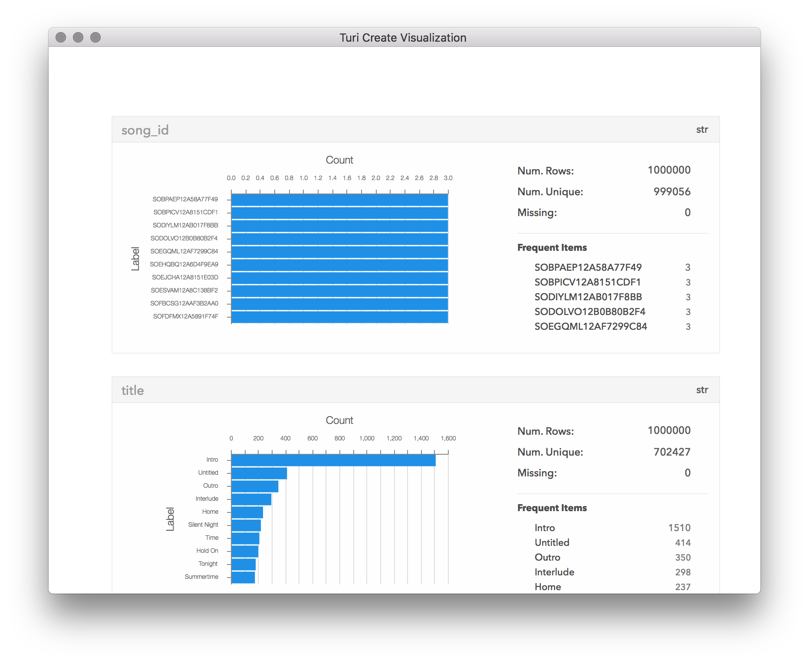
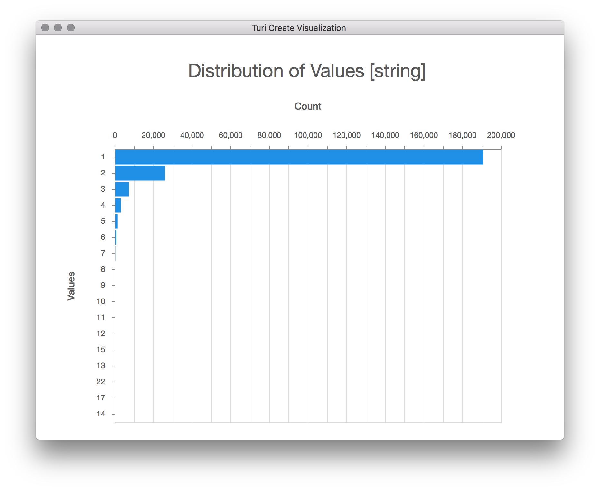

Data Manipulation
It isn't often that your dataset is "clean" enough to run one of our toolkits on it in a meaningful way right after import. Such is life...data is messy. SFrames enable you to complete data cleaning tasks in a scalable way, even on datasets that are much larger than your computer's memory.
Column Selection and Manipulation
A problem you may have noticed in the song metadata is that some songs'
year value is 0. Suppose we want to change those to a missing value, so
that they do not skew a summary statistic over the column (e.g. mean
or min). If we knew about this before parsing, or are willing to parse
the file again, we could add 0 to the na_values option of read_csv.
Alternatively, we can apply an arbitrary function to one or multiple
columns of an SFrame. Here's how to replace those zeroes with missing
values with a Python lambda function:
songs['year'] = songs['year'].apply(lambda x: None if x == 0 else x)
songs.head(5)+--------------------+----------------------+--------------------------------+
| song_id | title | release |
+--------------------+----------------------+--------------------------------+
| SOQMMHC12AB0180CB8 | Silent Night | Monster Ballads X-Mas |
| SOVFVAK12A8C1350D9 | Tanssi vaan | Karkuteill\xc3\xa4 |
| SOGTUKN12AB017F4F1 | No One Could Ever | Butter |
| SOBNYVR12A8C13558C | Si Vos Quer\xc3\xa9s | De Culo |
| SOHSBXH12A8C13B0DF | Tantce Of Aspens | Rene Ablaze Presents Winte ... |
+--------------------+----------------------+--------------------------------+
+------------------+------+
| artist_name | year |
+------------------+------+
| Faster Pussy cat | 2003 |
| Karkkiautomaatti | 1995 |
| Hudson Mohawke | 2006 |
| Yerba Brava | 2003 |
| Der Mystic | None |
+------------------+------+
[5 rows x 5 columns]Notice we had to reassign the resulting column back to our SFrame. This is because the content of the SFrame's columns (a separate data structure called an SArray) is immutable. SFrames can add and subtract columns liberally though, as it essentially is just a carrier of references to SArrays.
We used a lambda function here because it is the simplest way to
instantiate a small function like that. The apply method will take a
named function (a normal Python function that starts with def) as
well. As long as the function takes one parameter and returns one
value, it can be applied to a column.
We can also apply a function to multiple columns. Suppose we want to
add a column of the number of times the word 'love' is used in the
title and artist column:
songs['love_count'] = songs[['title', 'artist_name']].apply(
lambda row: sum(x.lower().split(' ').count('love') for x in row.values()))
songs.topk('love_count', k=5)+--------------------+--------------------------------+
| song_id | title |
+--------------------+--------------------------------+
| SOMYDCX12A8AE4836B | The Love Story (Part 1) In ... |
| SONXAVM12AB017AA1D | Document 15 |
| SOAWJOC12A8C1367A7 | Black Black Window |
| SOXAVWF12A8AE4922C | One Piece |
| SOAJRDR12A8C1383B1 | Love Love Love |
+--------------------+--------------------------------+
+--------------------------------+--------------------------------+------+------------+
| release | artist_name | year | love_count |
+--------------------------------+--------------------------------+------+------------+
| Skid Row / 34 Hours | Skid Row | None | 4 |
| Feels_ Feathers_ Bog and Bees | Low Low Low La La La Love ... | None | 3 |
| Ends Of June | Low Low Low La La La Love ... | 2007 | 3 |
| Low Low Low La La La Love ... | Low Low Low La La La Love ... | 2007 | 3 |
| Radio Hitz | Spider Murphy Gang | None | 3 |
+--------------------------------+--------------------------------+------+------------+
[5 rows x 6 columns]A few things to note here. We first select a subset of columns using a list within square brackets. This is useful in general, but it helps us with performance in this case, as fewer values are scanned. Also, when apply is called on an SFrame instead of an SArray as shown here, the input of the lambda function is a dictionary where the keys are the column names, and the values correspond to that row's values.
Another very useful and common operation is the ability to select columns based on types. For instance, this extracts all the columns containing strings.
songs[str]Data:
+--------------------+-------------------------------+
| song_id | title |
+--------------------+-------------------------------+
| SOQMMHC12AB0180CB8 | Silent Night |
| SOVFVAK12A8C1350D9 | Tanssi vaan |
| SOGTUKN12AB017F4F1 | No One Could Ever |
| SOBNYVR12A8C13558C | Si Vos Querés |
| SOHSBXH12A8C13B0DF | Tantce Of Aspens |
| SOZVAPQ12A8C13B63C | Symphony No. 1 G minor "Si... |
| SOQVRHI12A6D4FB2D7 | We Have Got Love |
| SOEYRFT12AB018936C | 2 Da Beat Ch'yall |
| SOPMIYT12A6D4F851E | Goodbye |
| SOJCFMH12A8C13B0C2 | Mama_ mama can't you see ? |
+--------------------+-------------------------------+
+-------------------------------+-------------------------------+
| release | artist_name |
+-------------------------------+-------------------------------+
| Monster Ballads X-Mas | Faster Pussy cat |
| Karkuteillä | Karkkiautomaatti |
| Butter | Hudson Mohawke |
| De Culo | Yerba Brava |
| Rene Ablaze Presents Winte... | Der Mystic |
| Berwald: Symphonies Nos. 1... | David Montgomery |
| Strictly The Best Vol. 34 | Sasha / Turbulence |
| Da Bomb | Kris Kross |
| Danny Boy | Joseph Locke |
| March to cadence with the ... | The Sun Harbor's Chorus-Do... |
+-------------------------------+-------------------------------+Now, you may not feel comfortable transforming a column without inspecting more
than the first 10 rows of it, as we did with the year column. To quickly get
a summary of the column, we can do:
songs['year'].summary()+--------------------+---------------+----------+
| item | value | is exact |
+--------------------+---------------+----------+
| Length | 1000000 | Yes |
| Min | 0.0 | Yes |
| Max | 2011.0 | Yes |
| Mean | 1030.325652 | Yes |
| Sum | 1030325652.0 | Yes |
| Variance | 997490.582407 | Yes |
| Standard Deviation | 998.744503067 | Yes |
| # Missing Values | 0 | Yes |
| # unique values | 90 | No |
+--------------------+---------------+----------+
Most frequent items:
+-------+--------+-------+-------+-------+-------+-------+-------+-------+-------+
| value | 0 | 2007 | 2006 | 2005 | 2008 | 2009 | 2004 | 2003 | 2002 |
+-------+--------+-------+-------+-------+-------+-------+-------+-------+-------+
| count | 484424 | 39414 | 37546 | 34960 | 34770 | 31051 | 29618 | 27389 | 23472 |
+-------+--------+-------+-------+-------+-------+-------+-------+-------+-------+
+-------+
| 2001 |
+-------+
| 21604 |
+-------+
Quantiles:
+-----+-----+-----+-----+--------+--------+--------+--------+--------+
| 0% | 1% | 5% | 25% | 50% | 75% | 95% | 99% | 100% |
+-----+-----+-----+-----+--------+--------+--------+--------+--------+
| 0.0 | 0.0 | 0.0 | 0.0 | 1970.0 | 2002.0 | 2008.0 | 2009.0 | 2011.0 |
+-----+-----+-----+-----+--------+--------+--------+--------+--------+
It appears that there are no other bogus years than 0. This summary splits its values into "exact" and "approximate". The approximate values could certainly be returned as exact values, but for the summary we use approximate values to make sure exploring large datasets is scalable. The methods we use only do a single pass of the data in the column, and each operation has well- defined bounds on how wrong the answer will be, which are listed in our API Reference.
Using the most frequent items and quantiles described here, you can probably almost picture the distribution of years, where the tallest part is squarely within the 2000s. Fortunately, we don't have to just picture it in our heads. Turi Create provides visualizations of SFrames, as well as other data structures. Turi Create visualization is covered in depth in the Visualization section. To view a histogram of the SArray, we run:
songs['year'].show()![songs['year'].show()](images/sframe_user_guide_1_histogram.png)
We have done some exploration, transformation, and feature generation. Let's spend some time filtering values we won't care about later. For example, perhaps we'll need an SFrame with only dated songs. This basic filter operation looks like this:
dated_songs = songs[songs['year'] != None]
dated_songs+--------------------+--------------------------------+
| song_id | title |
+--------------------+--------------------------------+
| SOQMMHC12AB0180CB8 | Silent Night |
| SOVFVAK12A8C1350D9 | Tanssi vaan |
| SOGTUKN12AB017F4F1 | No One Could Ever |
| SOBNYVR12A8C13558C | Si Vos Quer\xc3\xa9s |
| SOEYRFT12AB018936C | 2 Da Beat Ch'yall |
| SOYGNWH12AB018191E | L'antarctique |
| SOLJTLX12AB01890ED | El hijo del pueblo |
| SOMPVQB12A8C1379BB | Pilots |
| SOSDCFG12AB0184647 | 006 |
| SOBARPM12A8C133DFF | (Looking For) The Heart Of ... |
+--------------------+--------------------------------+
+--------------------------------+------------------+------+------------+
| release | artist_name | year | love_count |
+--------------------------------+------------------+------+------------+
| Monster Ballads X-Mas | Faster Pussy cat | 2003 | 0 |
| Karkuteill\xc3\xa4 | Karkkiautomaatti | 1995 | 0 |
| Butter | Hudson Mohawke | 2006 | 0 |
| De Culo | Yerba Brava | 2003 | 0 |
| Da Bomb | Kris Kross | 1993 | 0 |
| Des cobras des tarentules | 3 Gars Su'l Sofa | 2007 | 0 |
| 32 Grandes \xc3\x89xitos CD 2 | Jorge Negrete | 1997 | 0 |
| The Loyal | Tiger Lou | 2005 | 0 |
| Lena 20 \xc3\x85r | Lena Philipsson | 1998 | 0 |
| Cover Girl | Shawn Colvin | 1994 | 0 |
+--------------------------------+------------------+------+------------+
[? rows x 6 columns]
Note: Only the head of the SFrame is printed. This SFrame is lazily evaluated.
You can use len(sf) to force materialization.The output does a good job at explaining what is happening here. SFrames will not do any work if it isn't required right away. This way, if you decide this filter operation isn't for you after looking at the first few rows, Turi Create won't waste computation time doing it anyways. However, it is important to verify that the missing values were indeed removed, and that we indeed removed 484424 rows, so we'll force materialization of the new SFrame.
len(dated_songs)515576Why does this filtering syntax work? What we're actually doing is placing an
SArray in the square brackets. A comparison operator applied to an SArray
returns a new SArray of the same length as the original, but with values that
correspond to true or false based on the operator. Here's what it looks
like:
songs['year'] != Nonedtype: int
Rows: 1000000
[1, 1, 1, 1, 0, 0, 0, 1, 0, 0, 1, 1, 0, 1, 0, 1, 1, 1, 1, 0, 0, 0, 1, 1, 0, 0, 1, 1, 0, 0, 0, 0, 0, 1, 1, 1, 0, 1, 0, 1, 0, 1, 0, 1, 1, 1, 0, 1, 0, 0, 0, 0, 1, 1, 1, 0, 0, 1, 0, 0, 1, 1, 0, 1, 1, 1, 0, 0, 0, 1, 0, 0, 1, 0, 1, 1, 0, 0, 0, 0, 1, 0, 0, 1, 1, 0, 1, 0, 1, 0, 0, 0, 1, 1, 1, 1, 0, 1, 1, 1, ... ]We may want to use more than one comparison operator, for which you must place each comparison statement in parentheses and use the bitwise boolean logic operators to combine the statements, as Python does not allow the overloading of logical operators. Perhaps we are building a music recommender with this data, and we would like to only use "reasonable" play counts, for some definition of reasonable:
reasonable_usage = usage_data[(usage_data['listen_count'] >= 10) & (usage_data['listen_count'] <= 500)]
len(reasonable_usage)114026You can also write a lambda function to filter using the filter function,
which you can read about in the API Reference.
Joins and Aggregation
Another important way to filter a dataset is to get rid of duplicate data. A nice way to search for duplicate data is to visualize the SFrame.
songs.show()
It appears our song_id is not completely unique. This would make merging the
songs and usage_data SFrames error-prone if all we want to do is add song
title information to the existing usage data. In this particular dataset, these
repeat songs are included because they may have been released on several
different albums (movie soundtracks, radio singles, etc.). If we do not care
about which album release is included in the dataset, we can filter those
duplicates like this:
other_cols = songs.column_names()
other_cols.remove('song_id')
agg_list = [tc.aggregate.SELECT_ONE(i) for i in other_cols]
unique_songs = songs.groupby('song_id', dict(zip(other_cols, agg_list)))This code block needs some further explanation. It is centered around calling
groupby with the SELECT_ONE aggregator. This selects a random
representative row from each group. You must explicitly denote which columns
will use this aggregator, so the list comprehension gathers all other columns
than the one we are grouping by and uses the SELECT_ONE aggregator for each
one. When used like this, SELECT_ONE will use the same random row for each
column. This is great if it is not important which of the duplicates you pick.
If it is, another aggregator like MIN or MAX may be in order.
Suppose we actually want to see the songs that have the highest play count? Now we can correctly group each song and aggregate its listen count, and then join the result to the song metadata to see the song titles.
usage_groups = usage_data.groupby(['song_id'], {'total_listens': tc.aggregate.SUM('listen_count'),
'num_unique_users': tc.aggregate.COUNT('user_id')})
usage_groups.join(songs, ['song_id']).topk('total_listens')+--------------------+------------------+---------------+
| song_id | num_unique_users | total_listens |
+--------------------+------------------+---------------+
| SOBONKR12A58A7A7E0 | 6412 | 54136 |
| SOAUWYT12A81C206F1 | 7032 | 49253 |
| SOSXLTC12AF72A7F54 | 6145 | 41418 |
| SOEGIYH12A6D4FC0E3 | 5385 | 31153 |
| SOFRQTD12A81C233C0 | 8277 | 31036 |
| SOAXGDH12A8C13F8A1 | 6949 | 26663 |
| SONYKOW12AB01849C9 | 5841 | 22100 |
| SOPUCYA12A8C13A694 | 3526 | 21019 |
| SOUFTBI12AB0183F65 | 2887 | 19645 |
| SOVDSJC12A58A7A271 | 2866 | 18309 |
+--------------------+------------------+---------------+
+--------------------------------+--------------------------------+
| title | release |
+--------------------------------+--------------------------------+
| You're The One | If There Was A Way |
| Undo | Vespertine Live |
| Revelry | Only By The Night |
| Horn Concerto No. 4 in E f ... | Mozart - Eine kleine Nacht ... |
| Sehr kosmisch | Musik von Harmonia |
| Dog Days Are Over (Radio Edit) | Now That's What I Call Mus ... |
| Secrets | Waking Up |
| Canada | The End Is Here |
| Invalid | Fermi Paradox |
| Ain't Misbehavin | Summertime |
+--------------------------------+--------------------------------+
+--------------------------------+------+------------+
| artist_name | year | love_count |
+--------------------------------+------+------------+
| Dwight Yoakam | 1990 | 0 |
| Bj\xc3\xb6rk | 2001 | 0 |
| Kings Of Leon | 2008 | 0 |
| Barry Tuckwell/Academy of ... | None | 0 |
| Harmonia | None | 0 |
| Florence + The Machine | None | 0 |
| OneRepublic | 2009 | 0 |
| Five Iron Frenzy | None | 0 |
| Tub Ring | 2002 | 0 |
| Sam Cooke | None | 0 |
+--------------------------------+------+------------+
[10 rows x 8 columns]The usage_data table is already in a great format for feeding to a
recommender algorithm as it has user and song identifiers, and some form
of a metric (number of listens) to rate how much the user liked the
song. The problem here is that users that listened to a song a lot
would skew the recommendations. At some point, once a user plays a song
enough times, you know they really like it. Perhaps we could translate
the listen_count into a rating instead. Here is a simple way to do
it:
s = usage_data['listen_count'].summary()
import numpy
buckets = numpy.linspace(s.quantile(.005), s.quantile(.995), 5)
def bucketize(x):
cur_bucket = 0
for i in range(0,5):
cur_bucket += 1
if x <= buckets[i]:
break
return cur_bucket
usage_data['rating'] = usage_data['listen_count'].apply(bucketize)
usage_dataColumns:
user_id str
song_id str
listen_count int
rating int
Rows: 2000000
Data:
+--------------------------------+--------------------+--------------+--------+
| user_id | song_id | listen_count | rating |
+--------------------------------+--------------------+--------------+--------+
| b80344d063b5ccb3212f76538f ... | SOAKIMP12A8C130995 | 1 | 1 |
| b80344d063b5ccb3212f76538f ... | SOBBMDR12A8C13253B | 2 | 2 |
| b80344d063b5ccb3212f76538f ... | SOBXHDL12A81C204C0 | 1 | 1 |
| b80344d063b5ccb3212f76538f ... | SOBYHAJ12A6701BF1D | 1 | 1 |
| b80344d063b5ccb3212f76538f ... | SODACBL12A8C13C273 | 1 | 1 |
| b80344d063b5ccb3212f76538f ... | SODDNQT12A6D4F5F7E | 5 | 2 |
| b80344d063b5ccb3212f76538f ... | SODXRTY12AB0180F3B | 1 | 1 |
| b80344d063b5ccb3212f76538f ... | SOFGUAY12AB017B0A8 | 1 | 1 |
| b80344d063b5ccb3212f76538f ... | SOFRQTD12A81C233C0 | 1 | 1 |
| b80344d063b5ccb3212f76538f ... | SOHQWYZ12A6D4FA701 | 1 | 1 |
| ... | ... | ... | ... |
+--------------------------------+--------------------+--------------+--------+
[2000000 rows x 4 columns]
Note: Only the head of the SFrame is printed.Working with Complex Types
SArrays are strongly-typed and some operations only work on certain types. Two
types deserve some special consideration in this user guide: list and dict.
These types can hold values of any type supported by SArrays, including
themselves. So you can have an SFrame with a column of dictionaries that each
have values that are lists of lists of dicts with mixed strings and
integers... anyway, you get the idea!
The dataset we're working with right now does not have any of these types, so we can show how to convert one or several columns to one of these iterable types. For instance, suppose we want a list of all albums with a list of each song that was on the album. We would obtain this list from our metadata like this:
albums = songs.groupby(['release','artist_name'], {'tracks': tc.aggregate.CONCAT('title'),
'years': tc.aggregate.CONCAT('year')})
albums+--------------------------------+--------------------------------+
| artist_name | release |
+--------------------------------+--------------------------------+
| Veruca Salt | Eight Arms To Hold You |
| Les Compagnons De La Chanson | Heritage - Le Chant De Mal ... |
| Nelly / Fat Joe / Young Tr ... | Sweat |
| The Grouch | My Baddest B*tches |
| Ozzy Osbourne | Diary of a madman / Bark a ... |
| Peter Hunnigale | Reggae Hits Vol. 32 |
| Burning Spear | Studio One Classics |
| Bond | New Classix 2008 |
| Lee Coombs feat. Katherine ... | Control |
| Stevie Wonder | Songs In The Key Of Life |
+--------------------------------+--------------------------------+
+--------------------------------+--------------------------------+
| tracks | years |
+--------------------------------+--------------------------------+
| [\'One Last Time\', \'With ... | array('d', [1997.0, 1997.0 ... |
| ['I Commedianti', 'Il Est ... | None |
| ['Grand Hang Out'] | array('d', [2004.0]) |
| ['Silly Putty (Zion I Feat ... | array('d', [1999.0]) |
| ["You Can\'t Kill Rock And ... | array('d', [1981.0, 1983.0 ... |
| ['Weeks Go By'] | None |
| ['Rocking Time'] | array('d', [1973.0]) |
| ['Allegretto', 'Kashmir'] | None |
| ['Control (10Rapid Remix)' ... | None |
| ['Ngiculela-Es Una Histori ... | array('d', [1976.0]) |
| ... | ... |
+--------------------------------+--------------------------------+
[230558 rows x 4 columns]
Note: Only the head of the SFrame is printed.The CONCAT aggregator simply creates a list of all values in the given column for each group. I included the year for debugging purposes, since I didn't know if the invariant of "every song on the same release has the same year" was true in this dataset. Even looking at the first row, this is clearly not true:
albums[0]{'artist_name': 'Veruca Salt',
'release': 'Eight Arms To Hold You',
'tracks': ['With David Bowie',
'One Last Time',
'The Morning Sad',
'Awesome',
'Stoneface',
"Don't Make Me Prove It",
'Straight',
'Earthcrosser',
'Benjamin',
'Volcano Girls',
'Shutterbug',
'Sound Of The Bell',
'Loneliness Is Worse',
'Venus Man Trap'],
'years': array('d', [1997.0, 1997.0, 1997.0, 1997.0, 1997.0, 1997.0, 1994.0, 1997.0, 1997.0, 1997.0, 1997.0, 1997.0, 1997.0, 1997.0])}In light of this complication, and for demonstration purposes, let's have our 'tracks' column contain dictionaries instead, where the key is the year and the value is a list of tracks.
albums = songs.groupby(['release','artist_name','year'], {'tracks':tc.aggregate.CONCAT('title')})
albums = albums.unstack(column=['year','tracks'], new_column_name='track_dict')
albums+--------------------------------+--------------------------------+
| artist_name | release |
+--------------------------------+--------------------------------+
| Veruca Salt | Eight Arms To Hold You |
| Les Compagnons De La Chanson | Heritage - Le Chant De Mal ... |
| Nelly / Fat Joe / Young Tr ... | Sweat |
| The Grouch | My Baddest B*tches |
| Ozzy Osbourne | Diary of a madman / Bark a ... |
| Peter Hunnigale | Reggae Hits Vol. 32 |
| Burning Spear | Studio One Classics |
| Bond | New Classix 2008 |
| Lee Coombs feat. Katherine ... | Control |
| Stevie Wonder | Songs In The Key Of Life |
+--------------------------------+--------------------------------+
+--------------------------------+
| track_dict |
+--------------------------------+
| {1994: [\'Straight\'], 199 ... |
| None |
| {2004: ['Grand Hang Out']} |
| {1999: ['Simple Man']} |
| {1986: [\'Secret Loser\'], ... |
| None |
| {1973: ['Rocking Time']} |
| None |
| None |
| {1976: ['Have A Talk With ... |
| ... |
+--------------------------------+
[230558 rows x 3 columns]The unstack function is essentially a convenience function for calling
groupby on all other columns with the CONCAT aggregator. This operation
can be undone with stack, which I won't take time to show in detail.
With our data organized this way, we can get some statistics on how many albums have this oddity and see that it's actually somewhat prevalent for this to occur:
albums['num_years'] = albums['track_dict'].item_length()
albums['num_years'].show()
We can still recover the full track listing with some dict operations, so
suppose we want both a list and a dict representation of the tracks.
albums['track_list'] = albums['track_dict'].dict_values()
albums+--------------------------------+--------------------------------+
| artist_name | release |
+--------------------------------+--------------------------------+
| Veruca Salt | Eight Arms To Hold You |
| Les Compagnons De La Chanson | Heritage - Le Chant De Mal ... |
| Nelly / Fat Joe / Young Tr ... | Sweat |
| The Grouch | My Baddest B*tches |
| Ozzy Osbourne | Diary of a madman / Bark a ... |
| Peter Hunnigale | Reggae Hits Vol. 32 |
| Burning Spear | Studio One Classics |
| Bond | New Classix 2008 |
| Lee Coombs feat. Katherine ... | Control |
| Stevie Wonder | Songs In The Key Of Life |
+--------------------------------+--------------------------------+
+--------------------------------+-----------+--------------------------------+
| track_dict | num_years | track_list |
+--------------------------------+-----------+--------------------------------+
| {1994: [\'Straight\'], 199 ... | 2 | [[\'Straight\'], [\'With D ... |
| None | None | None |
| {2004: ['Grand Hang Out']} | 1 | [['Grand Hang Out']] |
| {1999: ['Simple Man']} | 1 | [['Simple Man']] |
| {1986: [\'Secret Loser\'], ... | 3 | [["You Can\'t Kill Rock An ... |
| None | None | None |
| {1973: ['Rocking Time']} | 1 | [['Rocking Time']] |
| None | None | None |
| None | None | None |
| {1976: ['Have A Talk With ... | 1 | [['Have A Talk With God']] |
| ... | ... | ... |
+--------------------------------+-----------+--------------------------------+
[230558 rows x 5 columns]
Note: Only the head of the SFrame is printed.We have almost recovered our old column, but we have a list of lists instead of
just a single list. Fixing that is a simple apply away:
import itertools
albums['track_list'] = albums['track_list'].apply(lambda x: list(itertools.chain(*x)))
albums+--------------------------------+--------------------------------+
| artist_name | release |
+--------------------------------+--------------------------------+
| Veruca Salt | Eight Arms To Hold You |
| Les Compagnons De La Chanson | Heritage - Le Chant De Mal ... |
| Nelly / Fat Joe / Young Tr ... | Sweat |
| The Grouch | My Baddest B*tches |
| Ozzy Osbourne | Diary of a madman / Bark a ... |
| Peter Hunnigale | Reggae Hits Vol. 32 |
| Burning Spear | Studio One Classics |
| Bond | New Classix 2008 |
| Lee Coombs feat. Katherine ... | Control |
| Stevie Wonder | Songs In The Key Of Life |
+--------------------------------+--------------------------------+
+--------------------------------+-----------+--------------------------------+
| track_dict | num_years | track_list |
+--------------------------------+-----------+--------------------------------+
| {1994: [\'Straight\'], 199 ... | 2 | [\'Straight\', \'With Davi ... |
| None | None | None |
| {2004: ['Grand Hang Out']} | 1 | ['Grand Hang Out'] |
| {1999: ['Simple Man']} | 1 | ['Simple Man'] |
| {1986: [\'Secret Loser\'], ... | 3 | ["You Can\'t Kill Rock And ... |
| None | None | None |
| {1973: ['Rocking Time']} | 1 | ['Rocking Time'] |
| None | None | None |
| None | None | None |
| {1976: ['Have A Talk With ... | 1 | ['Have A Talk With God'] |
| ... | ... | ... |
+--------------------------------+-----------+--------------------------------+
[230558 rows x 5 columns]
Note: Only the head of the SFrame is printed.We can also filter elements from within a list or dictionary. Here is how to remove all songs made in 1994 or 1999:
albums['track_dict'] = albums['track_dict'].dict_trim_by_keys([1994, 1999])
albums+--------------------------------+--------------------------------+
| artist_name | release |
+--------------------------------+--------------------------------+
| Veruca Salt | Eight Arms To Hold You |
| Les Compagnons De La Chanson | Heritage - Le Chant De Mal ... |
| Nelly / Fat Joe / Young Tr ... | Sweat |
| The Grouch | My Baddest B*tches |
| Ozzy Osbourne | Diary of a madman / Bark a ... |
| Peter Hunnigale | Reggae Hits Vol. 32 |
| Burning Spear | Studio One Classics |
| Bond | New Classix 2008 |
| Lee Coombs feat. Katherine ... | Control |
| Stevie Wonder | Songs In The Key Of Life |
+--------------------------------+--------------------------------+
+--------------------------------+-----------+--------------------------------+
| track_dict | num_years | track_list |
+--------------------------------+-----------+--------------------------------+
| {1997: [\'With David Bowie ... | 2 | [\'Straight\', \'With Davi ... |
| None | None | None |
| {2004: ['Grand Hang Out']} | 1 | ['Grand Hang Out'] |
| {} | 1 | ['Simple Man'] |
| {1986: [\'Secret Loser\'], ... | 3 | ["You Can\'t Kill Rock And ... |
| None | None | None |
| {1973: ['Rocking Time']} | 1 | ['Rocking Time'] |
| None | None | None |
| None | None | None |
| {1976: ['Have A Talk With ... | 1 | ['Have A Talk With God'] |
| ... | ... | ... |
+--------------------------------+-----------+--------------------------------+
[230558 rows x 5 columns]
Note: Only the head of the SFrame is printed.Since dictionaries are good for item lookups, we can filter by elements we find in dictionaries. Here is a query that filters albums by whether any of their songs came out in 1965:
albums[albums['track_dict'].dict_has_any_keys(1965)]+----------------------------+--------------------------------+
| artist_name | release |
+----------------------------+--------------------------------+
| Jr. Walker & The All Stars | The Motown Story: The Sixties |
| The Seekers | The Best Sixties Album In ... |
| Jr. Walker & The All Stars | Sparks Present Motown Made ... |
| The Who | Who's Next |
| Bobby Vinton | The Best Of Bobby Vinton |
| Righteous Brothers | The Collection |
| Little Milton | Chess Blues |
| The Who | Singles Box |
| Dionne Warwick | Here I Am |
| Albert Ayler | Nuits De La Fondation Maeg ... |
+----------------------------+--------------------------------+
+--------------------------------+-----------+--------------------------------+
| track_dict | num_years | track_list |
+--------------------------------+-----------+--------------------------------+
| {1965: ['Shotgun']} | 1 | ['Shotgun'] |
| {1965: ['The Carnival Is O ... | 1 | ['The Carnival Is Over'] |
| {1965: ["Cleo\'s Back"]} | 1 | ["Cleo\'s Back"] |
| {1995: ["I Don\'t Even Kno ... | 4 | [\'My Generation\', \'Behi ... |
| {1991: [\'Please Love Me F ... | 6 | [\'Roses Are Red (My Love) ... |
| {2006: ['Let The Good Time ... | 4 | ['Justine', 'Stagger Lee', ... |
| {1965: ["We\'re Gonna Make ... | 1 | ["We\'re Gonna Make It"] |
| {1965: ['Shout And Shimmy']} | 1 | ['Shout And Shimmy'] |
| {1965: ['How Can I Hurt Yo ... | 1 | ['How Can I Hurt You? (LP ... |
| {1969: ['Music Is The Heal ... | 4 | ['Spirits', 'Spirits Rejoi ... |
+--------------------------------+-----------+--------------------------------+
[? rows x 5 columns]
Note: Only the head of the SFrame is printed. This SFrame is lazily evaluated.
You can use len(sf) to force materialization.Converting to a list or dict doesn't need to group by the rest of the values in
the row. If for some reason you want to turn this into a table with one column
and all values packed into a list, you can!
big_list = albums.pack_columns(albums.column_names())
big_list+--------------------------------+
| X1 |
+--------------------------------+
| [\'Veruca Salt\', \'Eight ... |
| ['Les Compagnons De La Cha ... |
| ['Nelly / Fat Joe / Young ... |
| ['The Grouch', 'My Baddest ... |
| [\'Ozzy Osbourne\', \'Diar ... |
| ['Peter Hunnigale', 'Regga ... |
| ['Burning Spear', 'Studio ... |
| ['Bond', 'New Classix 2008 ... |
| ['Lee Coombs feat. Katheri ... |
| ['Stevie Wonder', 'Songs I ... |
| ... |
+--------------------------------+
[230558 rows x 1 columns]
Note: Only the head of the SFrame is printed.The unpack function accomplishes the reverse task. These examples may
be a bit contrived, but these functions are very useful when working
with unstructured data like text, as you will be able to see in the
Text Analysis chapter of this guide.
To find out more, check out the API Reference for SFrames.